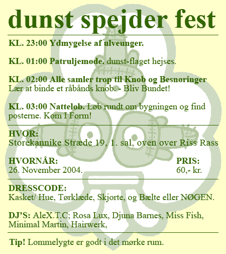
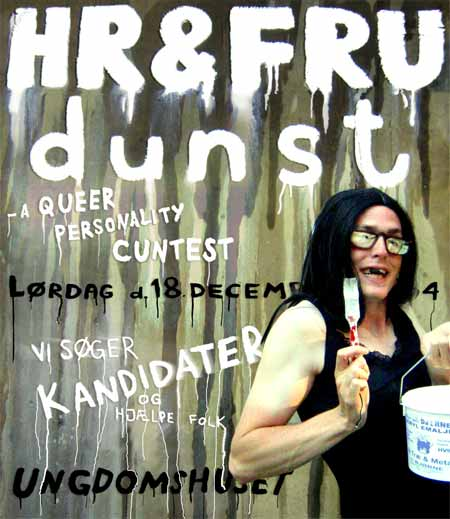
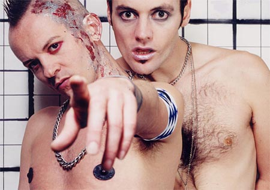

| dunst Spejder Fest |
26. November 2004 |
 |
| HR & FRU dunst |
18. December 2004 |
 |
HR&FRU dunst
- a queer personality cuntest |
Read
this in English |
Alle der kønspolitisk vil være
med til at forandre tingenes tilstand er velkommen i Ungdomshuset,
hvor dunst laver en sceneopbygning som går helt på tværs
af alle tidligere sceneopbygninger, en scene hvorpå gæster
og stjernerne mødes og blandes. Det bliver en fest i lys og
lyd.
Kategorierne i konkurrencen er:
Hetero, Reality, Hår, Helvede, Buler, Mad, Strik, Neon, Poppers,
Billig, Høj, Plørehul, Dyr.
Lige nu søger vi deltagere til HR&FRU dunst - a queer personality
cuntest.
Kom og bliv kåret som HR&FRU dunst i konkurrencen, hvor
alt er muligt, og hvor alt kan ske. Homo mænd i HETRO stil dyste
mod dragkings fra REALITY.
Transer med HÅR dyste mod lebbe femmes fra HELVEDE. Og måske
vil en BILLIG læder lebbe dyste mod en følsom homodreng
i hjemmeSTRIKket undertøj. Måske ikke, for der er mange
flere kategorier at vælge mellem.
Vælg 2 kategorier og tryk den af i 2 shows på den store
scene. Publikum vil sammen med en højt kvalificeret jury udkåre
én vinder - én HR&FRU dunst.
dunst er værter og vil sørge for den dårlige smag,
gode dj's, og fede
lysshows.
Sidste deadline for tilmelding: 10. December.
Praktiske oplysninger/tilmelding: hrfrudunst.dk
Meld dig til nu.
---------------------------------------------------------------------
Tid:
Lørdag d. 18 december 2004, Kl. 23
Sted:
UNGDOMSHUSET, Jagtvej 69, ved nørrebro rundel, København
N.
Billetsalg:
Entré. 60,- kr. (intet forsalg)
DJ's:
Djuna Barnes, Stimulundia, Rosa Lux, AleX.T.C., Minimal Martin, |
---------------------------------------------------------------------
Efter konkurrencen er der koncert med Bøssebandet Atomizer
fra London.
 |
| Et digt af Hairwerk |
Hvorfor er vi? Hvad er rum? Og er alt omkring os? Hvad er dog meningen
med alt dette kaotiske liv? Kig rundt og spørg dig selv, hvad
er alt dette? Og hvorfor? Er vi en uendelig gentagelse af mikro og
makro? Er der nogen ende? Og hvad er Døden egentligt?
Kan få Kulde Gysninger ved tanken om at vi måske blot
er Mikrober i én eller andens hovedbund! Eller seng? En lille
bakterie på en celle i et skæl af et hår på
en krop i en verden som også blot er byggesten for en større
verden!
Det for nye tanker frem når det nu klør på min
krop! Udsletter jeg nu 25 universer ved at lade mine negle skrabe
frem og tilbage på min hud? Eller skaber jeg? Er alt levende?
Findes der noget dødt og hvad er fødsel? Efter glød?
Rum? Blod? Bølger? Osv. osv. Hvad er hvad og hvem er hvor?
Hvis er hvis og hvem hvornår? Tiden flyder mens hjertet slår.
Ku ku Hairwerk. |
| Sker der mere? |
| Se alle arrangementer i the CALENDAR |
Denne mail kan ikke besvares men hvis du vil i kontakt med os så skriv
til infodunst.dk
Hvis du vil leve et kedeligt liv uden dunst så afmeld dunst Nyhedsbrev
på forsiden af www.dunst.dk |